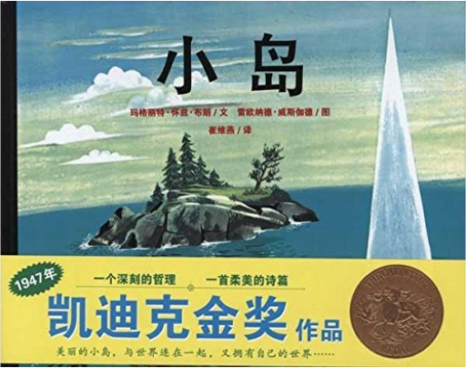
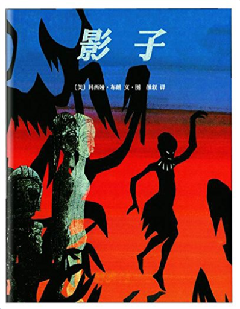
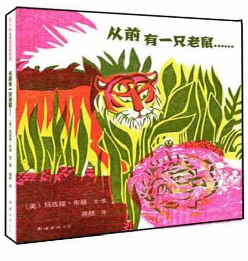
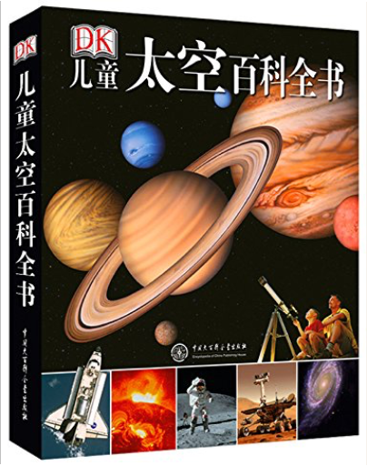
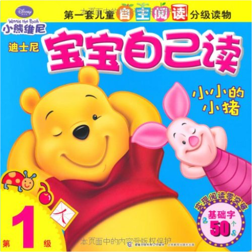
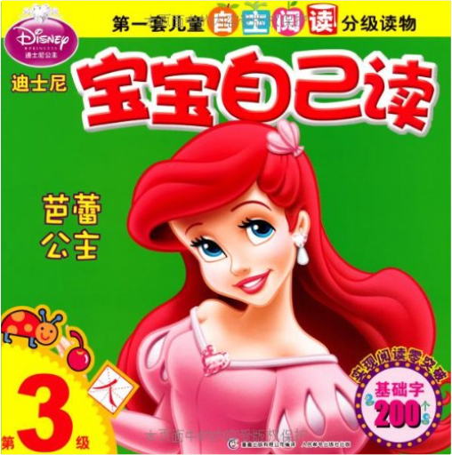
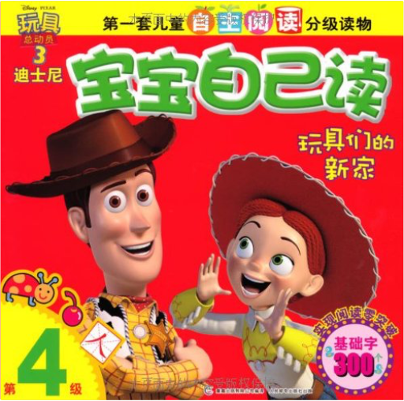
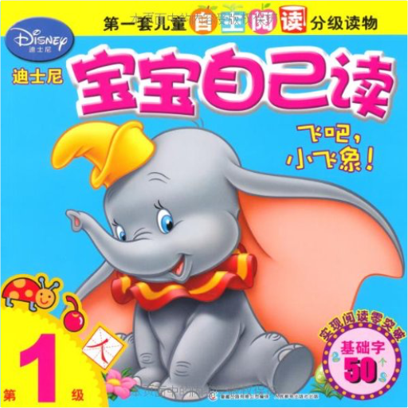
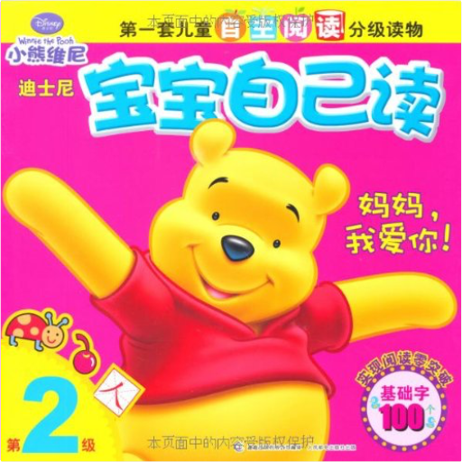
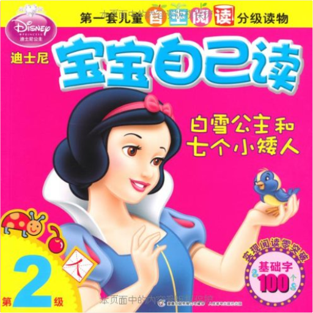

蒲蒲兰绘本馆:小岛玛格丽特·怀兹·布朗  《小岛》首次出版于1946年，之后一直广受读者喜爱。它以独一无二的魅力夺得了1947年凯迪克金奖，被称为美国最出色的童书之一。如潮的好评与随之而来的惊人发行量，更是让《小岛》放射出耀眼的光芒，在图画书的历史上写下了浓重而光辉的一笔。 影子玛西娅·布朗 《影子》内容简介：火光中、月光下、灯光里，只要有光就有影子，只要有火就有影子。影子不停跳跃、舞蹈，像是有生命的精灵，在非洲古老的文化中，在非洲口传文学里，影子确实有了生命，有了它自己的故事。玛西娅•布朗译自法国诗人布莱斯•桑德拉尔的同名诗歌，创作了这本《影子》，她采用剪影、拼贴的方式来展现影子的意象，用淳烈的深色为基调表现非洲森林火堆旁的故事，形象鲜明，意蕴深长，达到了表现力的极致。 从前有一只老鼠玛西娅•布朗 《从前有一只老鼠》内容简介：“谁敢说本大王从前是一只小老鼠，我就吃了他！” 一只大老虎吼叫道。然而一位法术高超的隐士却对此十分不屑。因为正是他把一只小老鼠变成了大猫，然后变成了狗，最后变成了这只威风八面、自以为是的大老虎。故事的创作灵感来自于印度古老的《五卷书》，引导孩子们去思考“强大”与“弱小”、“骄躁”与“谦逊”、“永恒”与“变化”之间千丝万缕的联系，是一则闪耀着智慧光芒的寓言。玛西娅?布朗的木版画非常有特色，棕绿色、土黄色、石榴红相搭配，自然丰富的木纹理为故事增添了古老而经典的韵味。  信谊世界精选图画书:月下看猫头鹰珍·尤伦 信谊世界精选图画书:月下看猫头鹰珍·尤伦 《月下看猫头鹰》主要内容：《月下看猫头鹰》在一个无风的隆冬夜晚，爸爸带着女孩一块去拜访森林里的猫头鹰。月亮高高地挂在天空，映着整个天是如此的光亮，远处传来火车的汽笛声，又长又低还带着点忧伤，回应这汽笛声的是阵阵狗吠声……一路上女孩一点声音也不敢有，因为爸爸不断地提醒她：拜访猫头鹰一定要非常安静才可以。空荡荡的雪地上，两人就这么一前一后地走着，只留下长短不一的脚印。爸爸和小女孩如置身在梦境般的宁静中，悄悄地追寻着猫头鹰的行踪。 这是怎么样的一段冒险？他们能否找到向往已久的猫头鹰？绘者以广角大视野的表现方式，将冬天静谧冷沁的感觉，真实地呈现出来，更把父女相互依存及传承的感觉表现无遗。 DK儿童太空百科全书美国DK公司 《DK儿童太空百科全书》是一本综合性的有关空间探索的百科全书。其内容几乎涵盖了所有普通读者感兴趣的和想要了解的太空知识。从距离我们最近的行星到遥远的星系，以及我们所在的整个宇宙。人类在太空探索进程中，包括中国在内的一些国家载人航天技术的最新进展，以及太空旅行等信息也被收录其中。并对地球、太阳、月亮等星球进行了详细的介绍。大量的精美图片配以简洁的文字叙述，并通过独家的美国航空航天局航天员和员工的介绍，让读者了解真实的国际空间站里的真实生活，这些成为《DK儿童太空百科全书》的一个亮点。这本《DK儿童太空百科全书》通过精彩的摄影图片，展示了宇宙的奇迹，让人们看到了一个视觉的已知世界，看到了外层空间和地球。除1000多幅精美的摄影图片外，该书还拥有数百幅的包括地图，图表，时间表等，并交叉引用。这些彩色数据使读者在视觉享受的同时，也直观地了解了文章难以表达的事物。《DK儿童太空百科全书》还提供了便捷的信息检索方式。《DK儿童太空百科全书》在构思，策划，开发，资料认证方面，成立了专门的专家委员会，对重要的事实和所有的资料核实，以确保高水准的编辑精度，并确保《DK儿童太空百科全书》的权威性。同时在语言上力求精准、简练、趣味。总体感觉容易理解，保证能吸引读者的阅读兴趣。另外，英国DK公司与美国航天局和其他空间机构的国际空间档案部门协调，在《DK儿童太空百科全书》中使用了许多未曾公开过的太空图片。如美国航天局提供的文物照片，包括服装，食品，徽章，和航天器零件。另外，《DK儿童太空百科全书》的主创人员有机会直接与航天员及计划参与者面谈，请他们对亲身经历的有关航天及发射等真实场景和细节感受进行详细描述。由美国国家航空航天局提供的超强震撼的摄影照片，新颖的图形，有创造性的版式设计，使这本《儿童太空百科全书》成为不可替代的家庭参考书，也是送给青少年的一个完美礼物。 迪士尼宝宝自己读(第1级)•小小的小猪美国迪士尼公司 《迪士尼宝宝自己读(第1级)·小小的小猪》是一套儿童自主阅读分级读物，是迪士尼为3岁至6岁的孩子量身定制的集识字、阅读为一体的读本。孩子们终于可以愉快而自豪地对爸爸妈妈发表他们的自主阅读宣言：我能自己读故事啦！ 迪士尼宝宝自己读(第3级)•芭蕾公主美国迪士尼公司 《迪士尼宝宝自己读(第3级)·芭蕾公主》是一套儿童自主阅读分级读物，是迪士尼为3岁至6岁的孩子量身定制的集识字、阅读为一体的读本。孩子们终于可以愉快而自豪地对爸爸妈妈发表他们的自主阅读宣言：我能自己读故事啦！ 迪士尼宝宝自己读(第4级)•玩具们的新家美国迪士尼公司 《迪士尼宝宝自己读(第4级)·玩具们的新家》是一套儿童自主阅读分级读物，是迪士尼为3岁至6岁的孩子量身定制的集识字、阅读为一体的读本。孩子们终于可以愉快而自豪地对爸爸妈妈发表他们的自主阅读宣言：我能自己读故事啦！ 迪士尼宝宝自己读•第1级:飞吧,小飞象!美国迪士尼公司 《迪士尼宝宝自己读·第1级:飞吧,小飞象!》是一套儿童自主阅读分级读物，是迪士尼为3岁至6岁的孩子量身定制的集识字、阅读为一体的读本。孩子们终于可以愉快而自豪地对爸爸妈妈发表他们的自主阅读宣言：我能自己读故事啦！ 迪士尼宝宝自己读•第2级:妈妈,我爱你!美国迪士尼公司 《迪士尼宝宝自己读·第2级:妈妈,我爱你!》是一套儿童自主阅读分级读物，是迪士尼为3岁至6岁的孩子量身定制的集识字、阅读为一体的读本。孩子们终于可以愉快而自豪地对爸爸妈妈发表他们的自主阅读宣言：我能自己读故事啦！ 迪士尼宝宝自己读•第2级:白雪公主和七个小矮人美国迪士尼公司 《迪士尼宝宝自己读·第2级:白雪公主和七个小矮人》是一套儿童自主阅读分级读物，是迪士尼为3岁至6岁的孩子量身定制的集识字、阅读为一体的读本。孩子们终于可以愉快而自豪地对爸爸妈妈发表他们的自主阅读宣言：我能自己读故事啦！ |
 Made with Delicious Library
Made with Delicious LibraryGuangzhou, AP zipflap congrotus delicious library Yv, Jarod